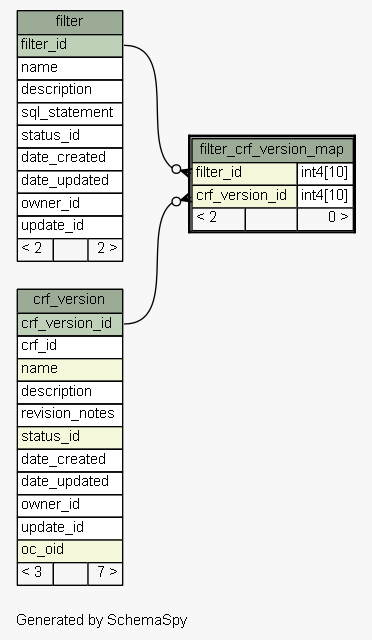
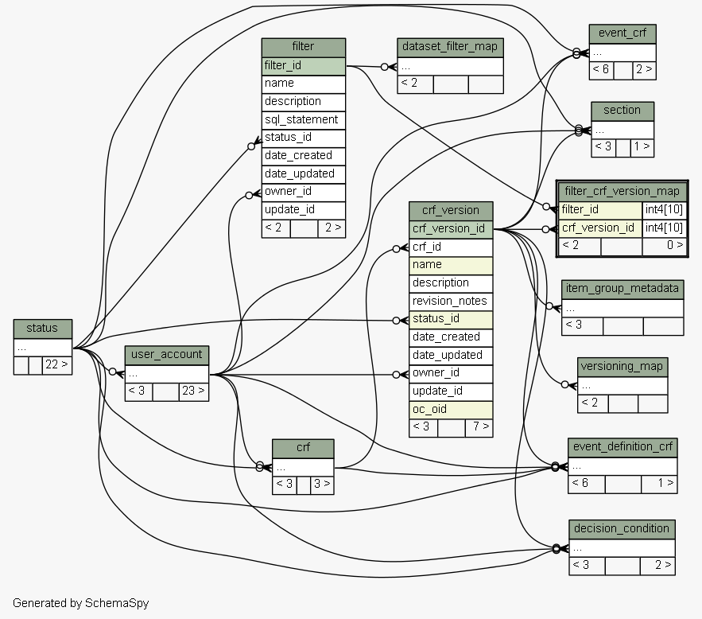

| Table oc312.public.filter_crf_version_map | Generated by SchemaSpy |
| |||||||||||||||||||||||||||||||
Analyzed at za okt 20 16:34 CEST 2012 | |||||||||||||||||||||||||||||||
Indexes:
| Column(s) | Type | Sort | Constraint Name |
|---|---|---|---|
| crf_version_id | Performance | Asc | i_filter_crf_version_map_crf_version_id |
| filter_id | Performance | Asc | i_filter_crf_version_map_filter_id |
|
  |